 In Fall 2023, I will be starting as a PhD student at University of Western Ontario, in London, Ontario, Canada. I'll be working under Chris Kapulkin. Some day I will write a pithy description of my actual research (maybe once it actually gets more under way!). For now, the TLDR version is: I'm interested in homotopy theory, (higher) category theory, ∞-categories, stable homotopy theory, and higher algebra.
A list of things I am trying to learn right now (let me know if you are interested in learning about any of these with me!):
I graduated in summer 2022 with a master's degree in Mathematics from UC Santa Cruz. My master's thesis was called Stable ∞-Categories and Their Homotopy Categories; my advisor was Beren Sanders.